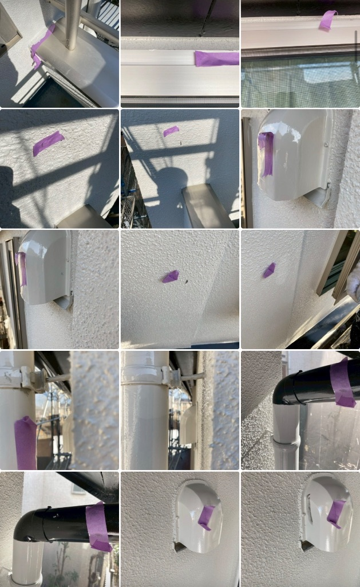

日野市で塗装工事の完了前点検！テープペタペタ作業🎨
綺麗になった現場を、お客様に自信を持って引き渡すために✨

※ 今日も元気に現場チェック！女性スタッフと職人さんで最終確認
今日は、
日野市で施工中の塗装工事の
完了前点検に行って来ました！
塗装工事も大詰めで、
あとは最終チェックだけ✨
🔍 完了前点検って何するの？
完了前点検では、
塗装工事が完璧に仕上がっているか
細かくチェックしていきます。
具体的には…
- ✅ ちょっと飛ばしてしまったペンキ
- ✅ はみ出してたりの場所
- ✅ 塗りムラやキズがないか
- ✅ 養生テープの跡が残っていないか
こういう細かい部分を、
しっかりチェックして
テープをペタペタ貼っていきます！

※ 気になる箇所に紫色のテープをペタペタ貼って職人さんに修正箇所を伝えます
📝 テープペタペタ作業
気になる部分を見つけたら、
その場所にテープをペタペタ貼っていきます。
このテープが、
後ほど塗装職人さんが
「ここを直してね！」の目印になるんです✨
テープを貼った場所は
塗装職人がテープを直して回る
という流れになります！
細かい部分まで気を配って、
完璧な仕上がりを目指します💪
✨ お客様に自信を持って引き渡すために
今回の塗装工事も、
職人さんたちが本当に丁寧に
仕上げてくれました✨
綺麗になった現場を見ると、
本当に嬉しくなります😊
綺麗になった現場を、
お客様に自信を持って
引き渡しできるように
完了前点検終了です！✨
あとは職人さんたちが
テープを貼った部分を直してくれれば、
完璧な仕上がりになります！
お客様にも喜んでもらえると思います😊
引き渡しが楽しみです✨